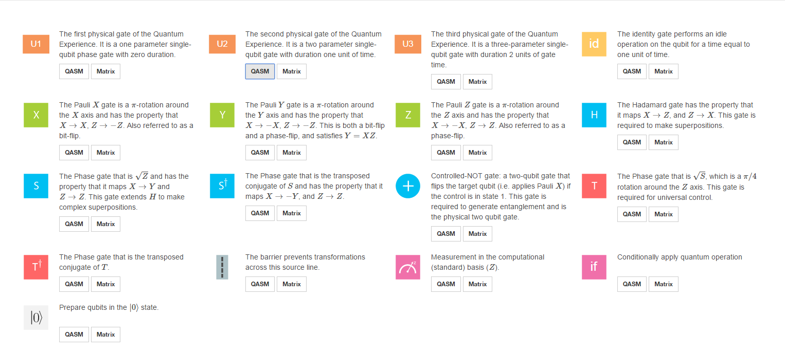

Developing a programming language for quantum computing is a major engineering challenge. Bits in a conventional computer are represented by transistors (along with other ancilliary components) - their states representing the 1s and 0s. The circuitry for manipulating and measuring those transistor states exists in an array, with elements addressed through the pins on the processor chip - this is the function of bytecode, which fundamentally determines which pins of a processor/memory chip voltage is sent to. Programming languages are the human-friendly way of putting together the bytecode.
A
general purpose quantum computer would require creating circuits that perform specific operations on qubits, and making those circuits addressable so they could be selectively activated. That's basically the foundation for developing a more abstract programming language for a quantum computer.
The
QKit API is a step in that direction, but ultimately tasks are still translated into bytecode executed by a conventional processor to simulate quantum computing operations. With
the IBM Q Composer virtual circuits can be made from elements that represent various mathematical operations. Unfortunately I'm crap at mathematics, so exactly what most of the elements do is currently beyond my understanding.

This was one of the experiments I put together:
Here I have a set of five quantum gates, in this case
Hadamard gates, with each qubit having an equal probability of being 1 or 0 when measured. The gauge elements along the X axis represent measurements of the qubit's state. What do we get after running this as a simulation? Well, first thing I'm presented with is a very pretty sphere, which I'm guessing is a Bloch sphere. Along the X axis of the Quantum Computation Basis, there are five-bit numbers, and Y values ranging between 0.035 and 0.031. A five-qubit array has a probability of 0.03125 of being in a given state, and that's approximately what the simulation returns for each combination of bits.

We can check whether these are probabilities by removing one of the Hadamard gates and repeating the simulation with four qubits. This time we get output values ranging between 0.066 and 0.057. Manually calculating the probability that a four-qubit array would be in a given state, we get 0.0625. Essentially my simulation is a fuzzy way of estimating probability.